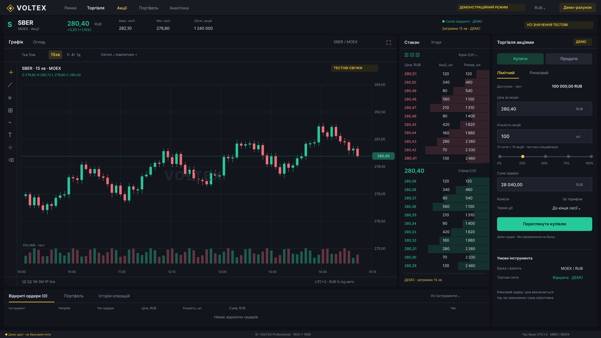
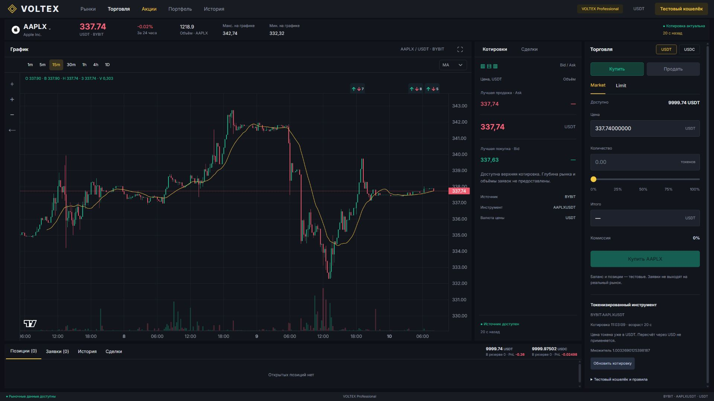
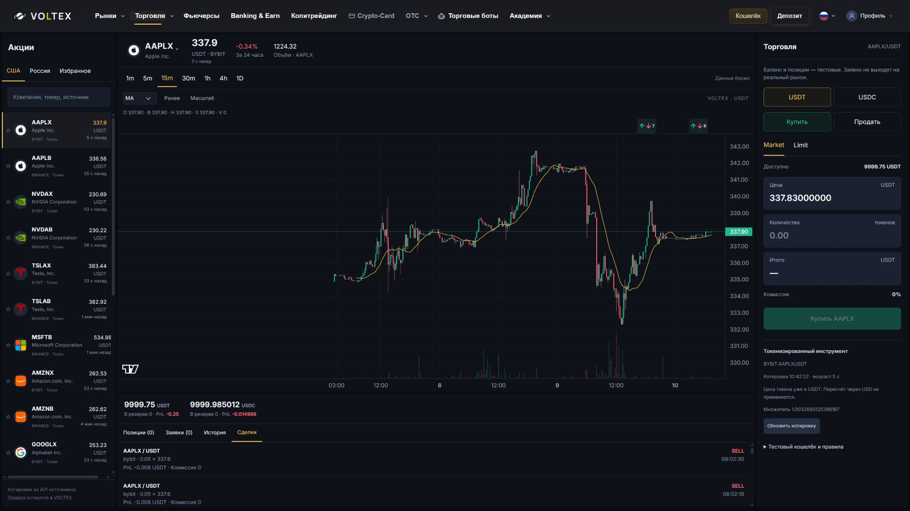

Оригінальний макет Figma, новий React-інтерфейс та попередній вигляд. Розміри панелей відповідають макету; котирування й свічки у preview надходять з існуючого джерела. Вигаданий стакан із макета не відтворюється.


